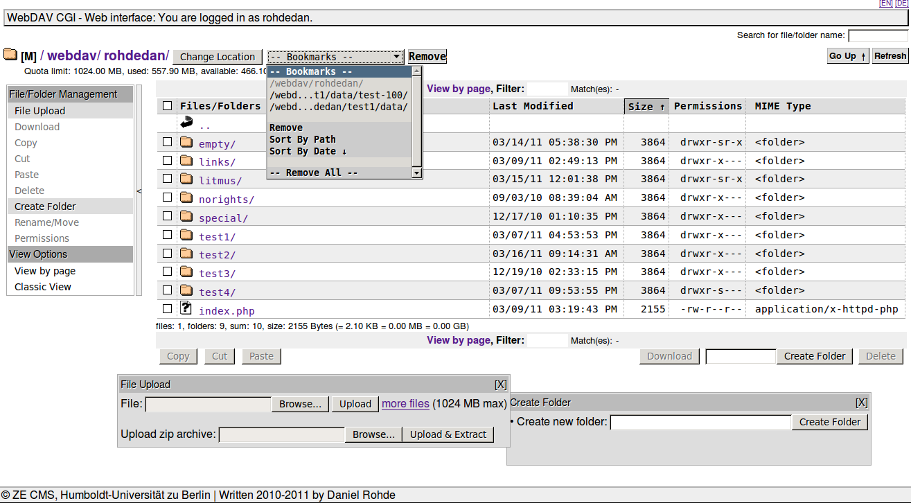
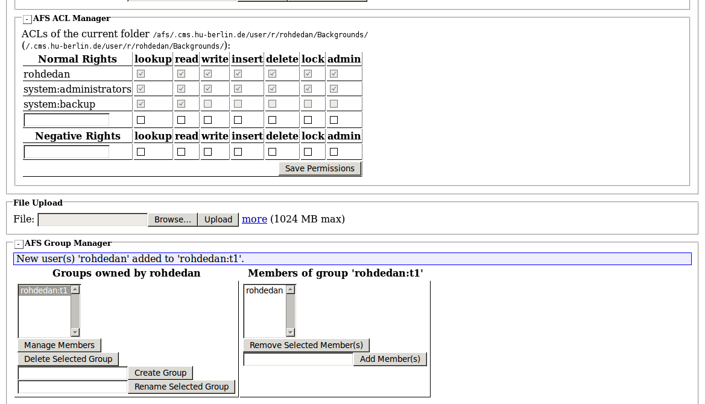
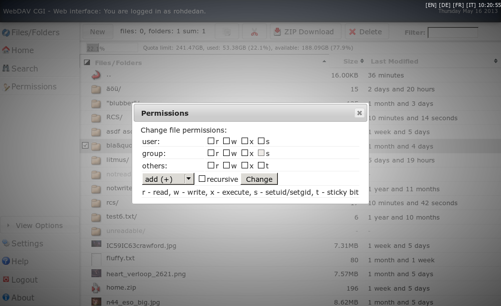
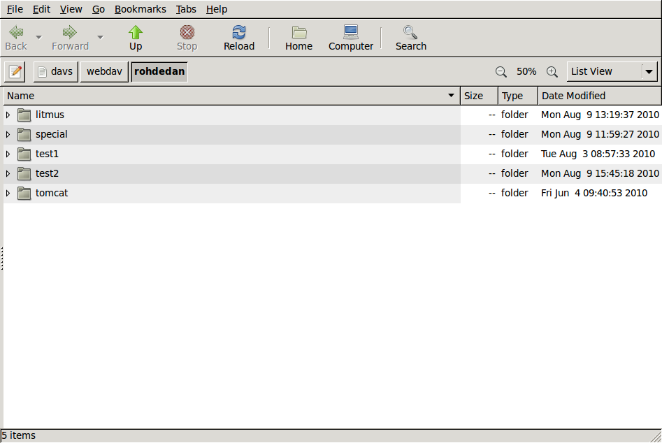
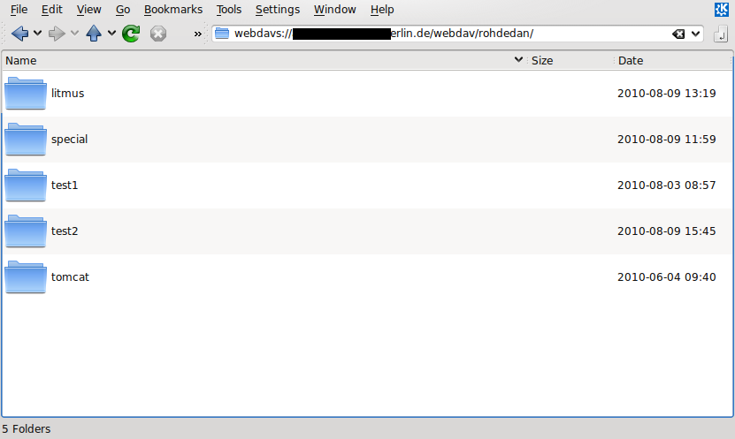
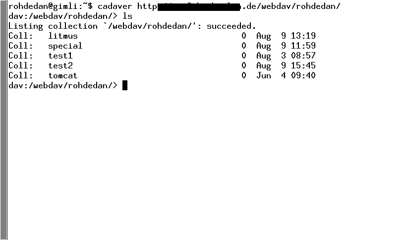
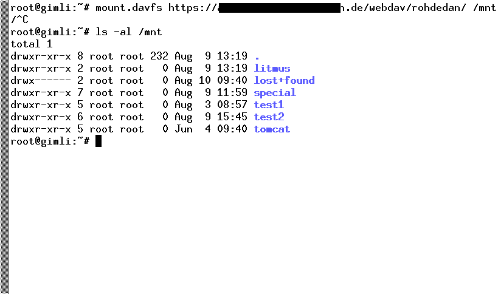
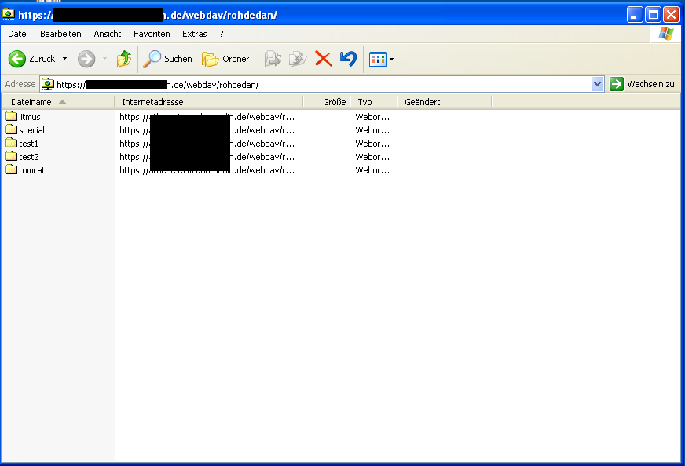
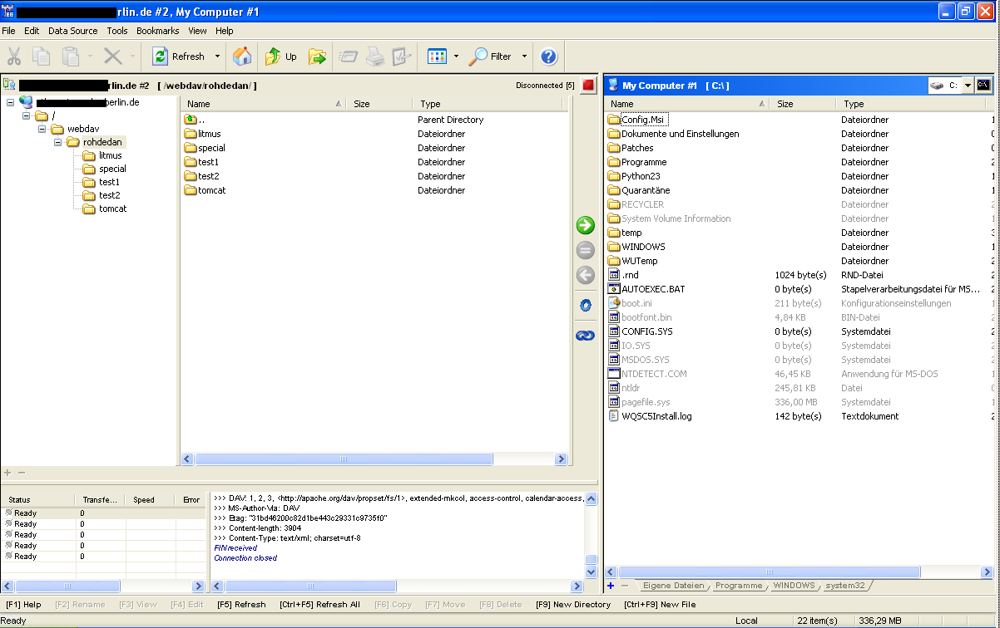

WebDAV CGI
 ... brings your existing file systems to the Web. It's a Perl CGI script that enables the WebDAV protocol (class 1,2,3) for Web server to manage Web sites or to use a Web server as a Web drive for files. And it comes with a modern Web interface to manage your files from anywhere. If you need correct permissions for files and folders you can install this WebDAV CGI script and a UID/GID wrapper. The Apache module mod_dav does not support UID/GID wrapping, so this implementation fills up this gap as a complete replacement.
{kind=link}
Content of this site:
Features
WebDAV CGI ...- supports WebDAV compliance classes 1, 2 and 3.
- supports CalDAV clients: Sunbird/Lightning, Evolution, iCal, iPhone, iPad.
- supports CardDAV clients: Addressbook (Mac OS X 10.6.x+), iPhone 4.
- supports Unix like ACL support: user/group/other read/write permissions (execute only over the http://apache.org/dav/props/:executable property).
- supports AFS and can be used as a WebDAV to AFS bridge or as a AFS Web front end with AFS ACL Manager and AFS Group Manager to replace filedrawers (afs file management)
- supports POSIX ACLs.
- supports GFS cluster file system
- supports Windows/Samba share access (SMB/CIFS support; only Kerberos authenticated access to ADS integrated shares)
- offers a simple Web interface for file/folder management: clipboard; file/Zip upload/download; rename, move, create and delete folders; file/folder name search; property viewer; file/folder statistics; change file/folder permissions; shows quota; image thumbnails
- has a server-side trash can.
- implements CGI interface.
- is wrappable to change UID/GID for file permissions other than web server permissions.
{kind=link}
- RFC 2518 - WebDAV (classes 1,2)
- RFC 4918 - WebDAV revision (class 3)
- RFC 4331 - Quota properties
- RFC 4709 - WebDAV mount
- RFC 4791 - WebDAV CalDAV (incomplete: no postconditions/preconditions, reports)
- RFC 3744 - WebDAV ACL (incomplete: no postconditions/preconditions, reports)
- RFC 5397 - WebDAV Current Principal Extension
- RFC 5689 - Extended MKCOL for WebDAV
- RFC 3253 - Versioning Extensions to WebDAV (only properties supported-report-set, supported-method-set)
- RFC 5323 - WebDAV Search (DASL) - basicsearch
- RFC 5842 - Binding Extensions to Web Distributed Authoring and Versioning (WebDAV) (incomplete: no post/preconditions)
- CalDAV Scheduling Extensions to WebDAV (Draft; incomplete/ALPHA: only collection/principal properties support)
- Additional WebDAV Collection Properties (Draft)
- Calendar Collection Entity Tag (CTag) in CalDAV (Draft)
- vCard Extensions to WebDAV (CardDAV) - CardDAV/iCard support (Draft)
- Storage of Groupware Objects in WebDAV (GroupDAV)
- MS-WDVME - WebDAV Microsoft Extensions
- MS-WDVSE - WebDAV Server Extensions
- Firefox web browser - for folder listing, POST uploads and download tests (free)
- M$ Internet Explorer 7 - for Web interface tests (commercial)
- cadaver - a Linux command line WebDAV client (free)
- davfs2 - mount a WebDAV resource as regular file system (free)
- fusedav - is a Linux userspace file system driver for mounting WebDAV shares (free)
- nautilus - the Gnome file manager (free)
- konqueror - the KDE browser (free)
- OpenOffice (free)
- Web Folders - Windows XP & Windows Vista (built-in)
- Novell netdrive (commercial)
- BitKinex WebDAV Client (free)
- TeamDrive (free/commercial)
- Adobe Dreamweaver (commercial)
- Finder - Mac OS X(v10.4,v10.6) file manager (built-in)
- GNOME Commander - a Linux file manager (free)
- PerlDAV - A WebDAV client library for Perl5 (free)
- WebDAV Navigator for Android
- Sunbird/Lightning 1.0 beta1 (free)
- Evolution v2.28.1 (free)
- iCal v2.x/v4.x (Mac OS X built-in)
- iPhone (iPhone built-in)
- iPad (iPad built-in)
- Addressbook - MacOS X 10.6.x (Mac OS X built-in)
- iPhone 4 - CardDAV Account (built-in)
- Speedy is supported since v0.5.3 but if you get "Out of memory" messages in your Apache error log you must set "MaxRuns", e.g.
#!/usr/bin/speedy -- -r20 - Windows Web Folder tries to read folders without a trailing '/' and Apache responses with a redirect (Workaround: use Apache rewrite rule instead of direct folder access)
- Windows 7 does not support SSL with Web Folders (yet) and has some trouble with HTTP Basic authentication (
HKEY_LOCAL_MACHINE\SYSTEM\CurrentControlSet\Services\WebClient\Parameters\BasicAuthLevelshould be2(DWORD)) - Amaya upload does not work yet in some configurations (works only with rewrites not with error handler)
- DAVExplorer has some trouble with XML parsing (PROPFIND) ... sometimes.
- nautilus cannot copy folders via clipboard
- more: see Client issues
Screenshots
| Web interface | ||||
|---|---|---|---|---|
|
file/folder browser
|

AFS Group & ACL Manager
|

Permissions dialog
|
||
| WebDAV clients | ||||
|

Nautilus
|

Konqueror
|

cadaver
|
||
|

davfs2
|

M$ Windows Explorer (XP)
|

BitKinex 3.2.3
|
||
{kind=link}
{kind=link}
{kind=link}
{kind=link}
{kind=link}
{kind=link}
{kind=link}
Download
Latest release: zip | tar.bz2 (Changes: see CHANGELOG from SVN).
The latest BETA release is also available: checkout source svn checkout svn://svn.code.sf.net/p/webdavcgi/code/trunk webdavcgi
Installation
see DocumentationClient issues
Finder (MacOS X 10.x):- ... is really slow because the MacOS X Finder generates a lot of requests to get Apple doubleheaders and to put .DS_Store files.
- a solution is to use CyberDuck instead of Finder
- or speed up the Finder a little bit: disable Finder previews and prevent .DS_Store file creation.
- You must specifiy the server port, e.g. cal.example.org:80
- WebDAV CGI must run in a root context (WebDAV CGI must handle the root of your (virtual) server)
- You must specify the server port, e.g. abook.example.org:80
- you must change the Account-URL to work with WebDAV CGI: it should be the same as your CalDAV folder URL or principal URL:
- Settings > Other > Add CalDAV Account
- Setup Server (e.g. https://www.example.org:443/webdav/caldav/), Username and Password
- Next > Advanced Settings > Account URL (e.g. https://www.example.org:443/webdav/caldav/)
- Slow response working with WebDAV resources on Windows Vista or Windows 7: see http://support.microsoft.com/kb/2445570 OR http://en.wikipedia.org/wiki/Web_Proxy_Autodiscovery_Protocol
Licensing
GPLv3
© ZE CMS, Humboldt-Universität zu Berlin | Written 2010-2011 by Daniel Rohde